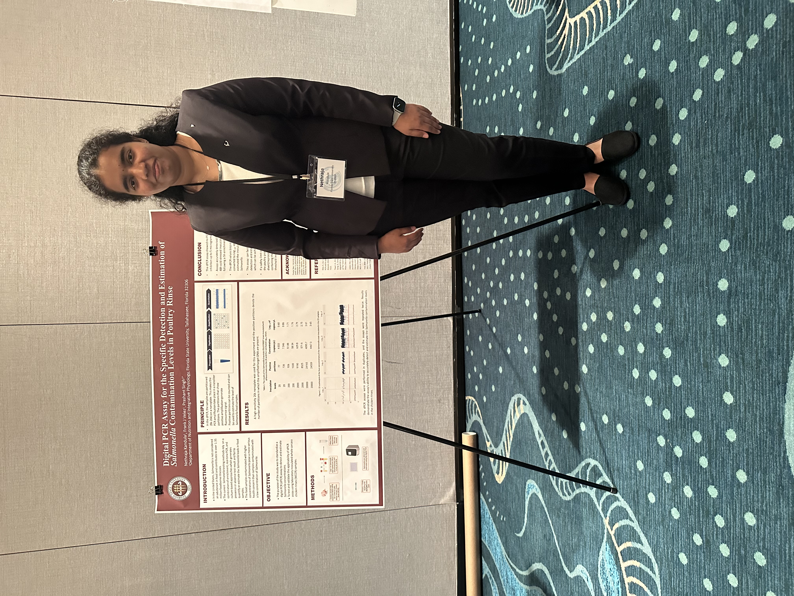
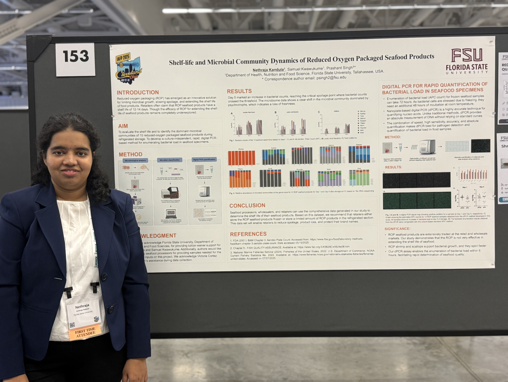
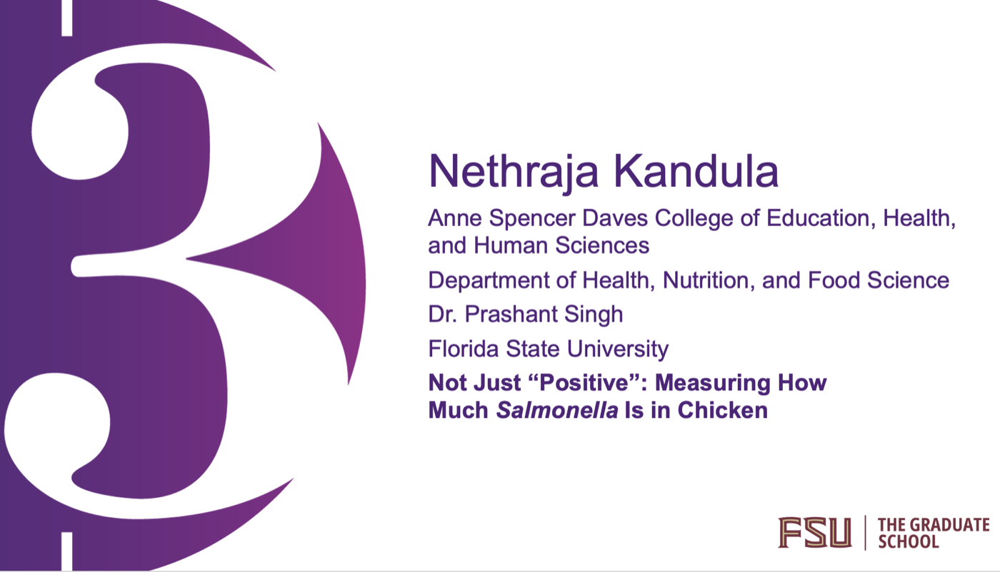
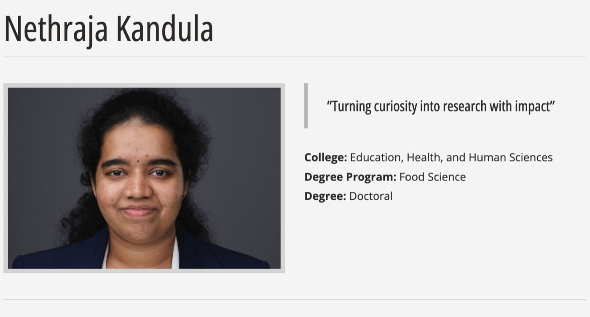
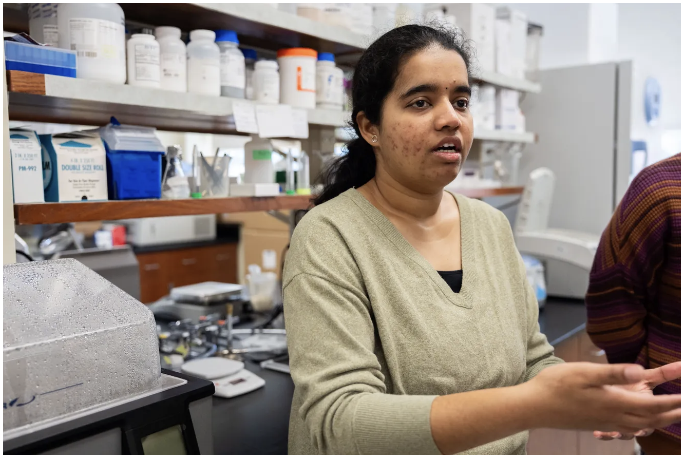
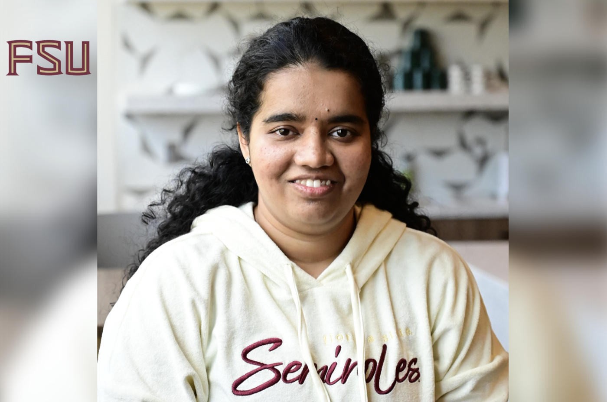
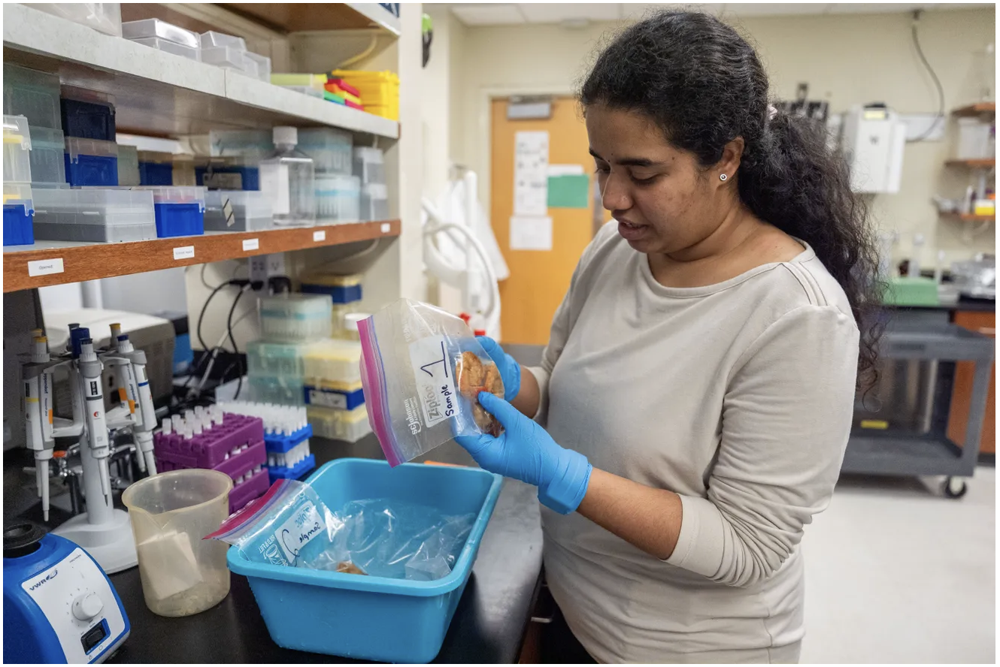

Florida Association for Food Protection, 2023
Digital PCR Assay for the Specific Detection and Estimation of Salmonella Contamination Levels in Poultry Rinse
Food Scientist | Food Safety & Applied R&D
Open to Opportunities
Food scientist specializing in food microbiology, molecular diagnostics, pathogen detection, digital PCR, food safety systems, and applied research. Experienced in developing and evaluating microbiological and molecular methods for foodborne pathogen detection and quantification.
About
Nethraja Kandula is a food scientist with expertise in foodborne pathogen detection, molecular method development, and applied microbiological research. Her work centers on generating reliable, practical evidence that supports food safety systems, method validation, and translational R&D.
Expertise
Presentations
Selected conference presentations in food safety, food microbiology, and molecular diagnostics.

Digital PCR Assay for the Specific Detection and Estimation of Salmonella Contamination Levels in Poultry Rinse

Rapid RNase-H-dependent PCR Lateral Flow Assay for the Detection of Pacific Whiteleg Shrimp, Litopenaeus vannamei

Rapid RNase-H-dependent PCR Assay for the Detection of Atlantic Scallop, Placopecten magellanicus

Shelf-life and Microbial Community Dynamics of Reduced Oxygen Packaged Seafood Products
Featured Stories & Media
Selected videos, profiles, and news features highlighting my research, presentations, and professional journey.

Three-minute presentation of my doctoral research at Florida State University.
Watch video
A graduate profile highlighting my food safety research, doctoral experience, accomplishments, and career goals.
Read profile
Media coverage of our seafood species authentication and mislabeling research.
Read article
A feature on translating rapid foodborne-pathogen detection research toward practical and commercial impact.
Read article
A photo feature showing our laboratory work testing shrimp species and investigating seafood authenticity.
View galleryDocuments
Choose the document that best matches your needs. My full CV provides a detailed record of my research, teaching, publications, and professional experience, while my résumé offers a concise overview.
Research, teaching, publications, presentations, service, and technical experience.
View Full CVA concise summary of professional experience, technical expertise, education, and selected accomplishments.
View Résumé